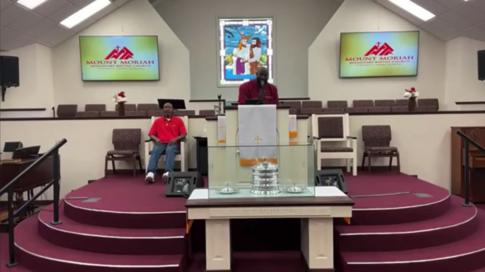
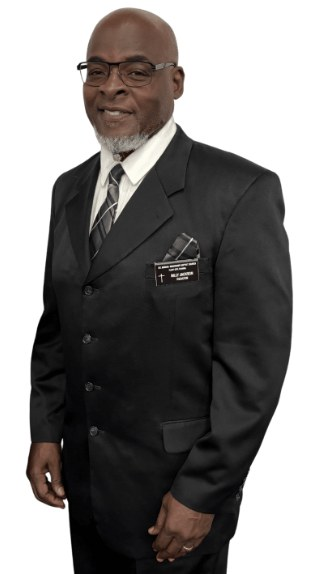

Lady Erie
Women's Ministry

Mount Moriah Missionary Baptist Church
Our Senior Pastor
Senior Pastor, Mount Moriah Missionary Baptist Church Plant City, Florida
Rev. Jason Montgomery was born on July 12, 1986, in Palm Beach Gardens, Florida, to Beverly and Henry Montgomery. Raised in Jupiter, Florida, as the oldest of three boys, he was baptized and became a member of Mt. Carmel Missionary Baptist Church in Jupiter under the leadership of the late Rev. Dr. N.E. Grubbs. From an early age, Jason was active in ministry, serving in the children's ministry, singing in the youth choir, and playing as one of the church's musicians at just eight years old.
After Rev. Grubbs retired, the Montgomery family moved their membership to Central Baptist Church under the leadership of Rev. T.R. Myers, where Jason continued to serve as a church musician, participated in the youth group, and began teaching and leading youth ministry. At age sixteen, the family returned to Mt. Carmel Missionary Baptist Church, now under the leadership of Rev. Dr. Michael Maeweather.
In 2004, Jason accepted his call from God to preach the Gospel, and on New Year's Eve 2005, he preached his trial sermon, becoming one of seventeen preachers in the Montgomery family lineage. That same year, following his graduation from Jupiter High School, Minister Montgomery enrolled at Alabama State University in Montgomery, Alabama, on a full music scholarship. While at ASU, he joined Hutchinson Missionary Baptist Church, marched with the university band as a "Marching Hornet," and became a member of Phi Beta Sigma Fraternity, Inc.
After two years at ASU, Jason transferred to Florida A&M University in Tallahassee, Florida, where he joined Bethel Missionary Baptist Church under the leadership of Rev. Dr. R.B. Holmes. At Bethel, he served on the ministerial staff, preaching often, ministering as a church musician, and eventually serving as Special Assistant to Dr. Holmes. Jason graduated from FAMU in 2009 and went on to Liberty University, where he earned his Master of Divinity degree in 2011.
While in seminary, Jason joined First Providence Missionary Baptist Church under the leadership of Rev. Deryl Jones. There, he served on the ministerial staff and led the youth and children's ministry, known as God's Anointed New Generation (the GANG Ministry). In 2018, Pastor Jones ordained Jason, and he was called to serve as Senior Pastor of Lighthouse Missionary Baptist Church in West Palm Beach, Florida. Over four years of faithful leadership, Lighthouse experienced both spiritual and numerical growth. In 2020, due to his son's health condition and the distance from home, Pastor Montgomery made the difficult decision to step down as Senior Pastor in order to care for his first ministry, his family.
That same year, he joined St. Paul Missionary Baptist Church under the leadership of Rev. Nathaniel Sims, serving as Assistant Pastor. During his time at St. Paul, he oversaw the construction and remodeling of the fellowship hall and the painting and renovation of the sanctuary, provided strategic ministry planning and development, taught Bible Study, and preached regularly, faithfully standing in the gap for Rev. Sims during a season of health challenges.
In 2023, Rev. Jason Montgomery was called to serve as Senior Pastor of Mount Moriah Missionary Baptist Church in Plant City, Florida, where he continues to serve God's people with passion and purpose, looking forward to many more years of ministry and service.
Rev. Montgomery is the devoted husband of Erie Montgomery and the proud father of six beautiful children: Lasharia, Jason II, Leilani, Jeremiah, Jordan, and Jackson.
Department Heads & Ministry Leaders
Every ministry at Mount Moriah is led by servants who love God and love people. Meet the men and women who serve our church family week after week.
Women's Ministry
Media Ministry
Church Admin
Outreach Ministry

Youth Ministry

Health Awareness Team
Hospitality Ministry
Young Adult Ministry
Deaconess Ministry
H.U.G.S.
Safety Team Ministry

Deacon Ministry
Deacon Ministry
Men's Ministry
Deacon Ministry
Deacon Ministry
A Legacy of Prayer
Pillars of prayer, wisdom, and faithfulness. We honor the mothers of Mount Moriah, whose lives of devotion continue to bless every generation of our church family.
The best introduction to Mount Moriah is a Sunday morning. We would love to welcome you.